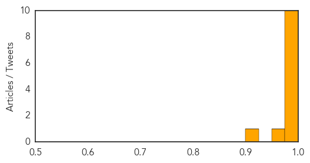

Ebola
30-Day Web Trend
25 alerts, 0 warnings

30-Day Twitter Trend
8 alerts, 0 warnings

Article Locations

Article Confidences
Top Articles:
- 1.000
- Guinea Ebola outbreak under control
- 1.000
- As Ebola outbreak spreads, vaccine remains years away
- 1.000
- Ebola epidemic worst in years
- 1.000
- CRS responds to deadly ebola outbreak in West Africa - Guinea
- 0.999
- Guinea's first Ebola survivors return to family, stigma remains
- 0.999
- Health workers in Guinea's capital to hunt for Ebola cases
- 0.999
- Ebola in Guinea: Dr. Sanjay Gupta reports on the outbreak
- 0.998
- Case numbers edge upward in West Africa Ebola outbreak
- 0.997
- Kenya : Mob attacks Ebola treatment centre in Guinea, suspected cases reach Mali
- 0.997
- A swift, effective and bloody killer
- 0.956
- We need precautionary measures against Ebola – Pharmaceutical Society
- 0.912
- Liberia and Senegal Close Land Borders with Guinea-a New Issue in the West African Society
Top Tweets:
-
No tweets found for Apr 14, 2014
MERS
30-Day Web Trend
30-Day Twitter Trend
Article Locations
Article Confidences

Top Articles:
- 1.000
- MERS Virus Surge Seen in the Middle East
- 1.000
- MERS Virus Hits Middle East Hard Once Again; Saudi Arabia Reports 15 New Cases And 2 Deaths
- 0.999
- Deadly MERS Virus Spreading Across The Middle East
- 0.999
- MERS VIRUS UAE SPREAD RESULTED TO THE DEATH OF 1 WHILE FIVE OTHERS ARE BEING A QUARANTINED
- 0.999
- In Saudi Arabia, MERS Virus Kills 70-Year-Old Foreigner
- 0.999
- 45-yr-old expat latest Saudi MERS victim
- 0.998
- Middle East respiratory syndrome coronavirus (MERS-CoV) – update
- 0.998
- Yemen reports its first case of Mers coronavirus
- 0.998
- 70-Year-Old Foreign Man Dies of MERS Virus in Saudi Arabia : Trending News : Fashion Times
- 0.998
- Filipino in UAE dies from MERS
- 0.997
- Foreigner dies of MERS in Saudi Arabia
- 0.996
- PH warns OFWs about Middle East virus
- 0.996
- Nine Saudi MERS cases add to Jeddah outbreak; Yemen has first case
- 0.995
- 'Abu Dhabi schools free of Mers virus' - Emirates 24
- 0.995
- 'Abu Dhabi schools free of Mers virus' - Emirates 24
- 0.993
- Middle East Sees Spike in Cases of Lethal Virus
- 0.993
- Foreigner dies of MERS in Saudi Arabia: ministry
- 0.993
- DOH prepares for possible entry of MERS-CoV
- 0.988
- UAE health authorities monitoring Mers cases in Filipinos
- 0.986
- DFA tells Filipinos in Mideast to guard against MERS-COV after 6 OFWs get infected
- 0.986
- News Scan for Apr 14, 2014
- 0.986
- Sixteen additional overseas cases of Middle East Respiratory Syndrome closely monitored by DH
- 0.985
- Jeddah residents told to guard against MERS
- 0.962
- DFA confirms OFW death in UAE due to MERS-CoV
- 0.934
- WHO provides Middle East respiratory syndrome coronavirus update
- 0.640
- MERS under control, Cabinet told
- 0.519
- MERS campaign calms nervesHealthcare
Top Tweets:
- 0.513
- RT: Spread of MERS-CoV Raises Alarms in Mideast http://t.co/xQsYV3EFOi MERS coronavirus